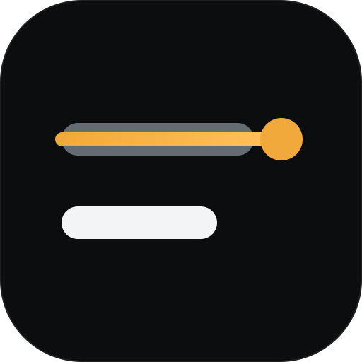
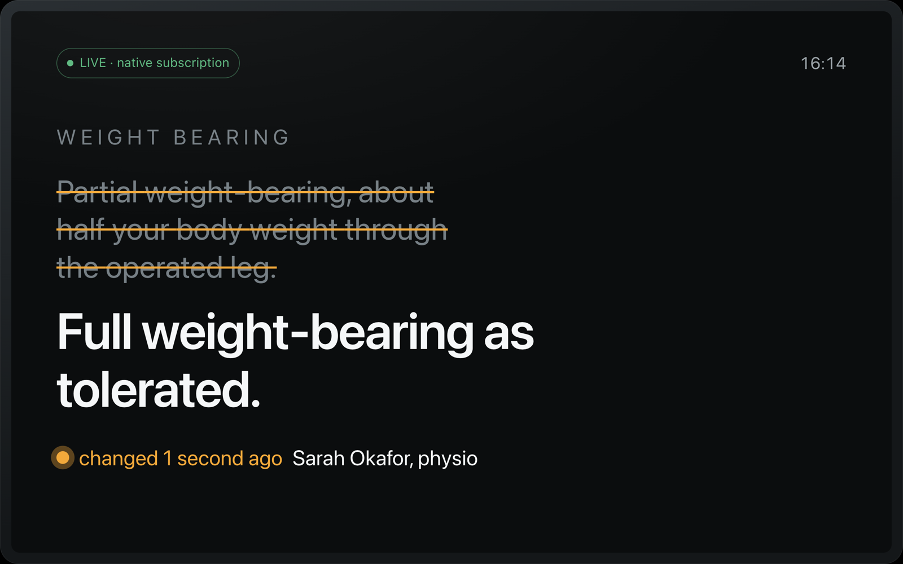

Once Ray hears “half your weight”, he acts on it.
care://ray/weight_bearinghistory
v2 · 2 daysPartial weight-bearing, about half your body weight.MA
v3 · nowFull weight-bearing as tolerated.Sarah Okafor, physioSO
Alexa+ track · Build, Ship, Shape

Unsay · an MCP server for Alexa+Unsay · v1.0.0Sheet 01 / 10
Post-op day 5 · 16:14
“Can I put weight on it yet?”
Ray Dunn, 68 · after a hip replacement
Alexa reads him version 2. His physio is writing version 3.
Unsay · v1.0.0Sheet 02 / 10
§1 · The problem
Once Ray hears “half your weight”, he acts on it.
Unsay · v1.0.0Sheet 03 / 10
§2 · The moment

1struck, never erased 2v3 stands 3who · how long ago“You can put about half your weight on it—”“Wait — don’t do that. Full weight-bearing as tolerated.”
Unsay · v1.0.0Sheet 04 / 10
§3 · How it works
Unsay · v1.0.0Sheet 05 / 10
§4 · Never spoken
“Full weight-bearing as tolerated.”
“Fall risk: HIGH. Lives alone.”
Take it slowly the first time, and have someone nearby.← shaped by the risk note, never spoken
Unsay · v1.0.0Sheet 06 / 10
§5 · Deployed · measured
200/200inside the sentence
Unsay · v1.0.0 · docs/proof/bench.remote.txtSheet 07 / 10
§6 · Built for Alexa+
Unsay · v1.0.0Sheet 08 / 10
§7 · Honest by design
Whether Alexa+ itself subscribes has not been answered.
initialize.json · not-runThe KMS provider has never run against a live key.
READMEUnsay does not generate clinical guidance.
every screenUnsay · v1.0.0Sheet 09 / 10
§8 · Try it
Liveunsay.edycu.dev
Serverapi.unsay.edycu.dev
Codegithub.com/edycutjong/unsay
Some sentences deserve to be unsaid.
unsay.edycu.dev
Unsay · v1.0.0 · MITSheet 10 / 10